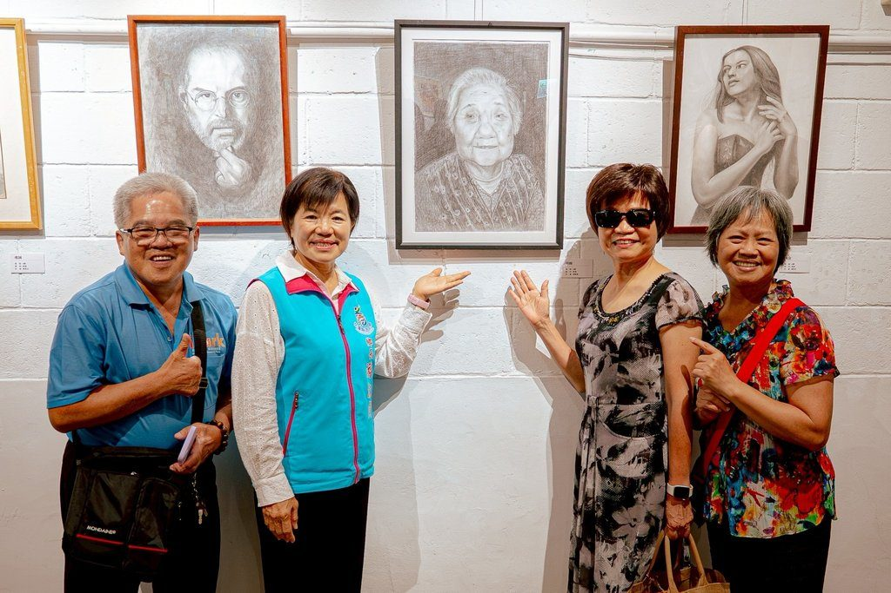

吉安好客藝術村點亮：萬物共生西畫聯展

可樂電子報小編/編輯
吉安好客藝術村於6月6日舉辦「萬物共生—西畫藝術聯展」開幕儀式，邀集27位藝術家共同展出65幅精彩作品，展現自然生態、生命情感與生活風景。開幕活動吸引眾多藝文愛好者到場參與，共同感受藝術創作所傳遞的溫暖與感動。

本次聯展的策展人馬雅麗老師特別致贈畫作予吉安鄉公所典藏，象徵藝術與地方文化深度連結的珍貴情誼。展出作品涵蓋風景、人物、花卉、靜物及寵物等多元題材，創作風格從寫實到抽象兼具，每件作品皆蘊含創作者獨特視角與生命體悟。

策展人馬雅麗老師表示，「萬物共生」不僅是本次展覽主題，更是一種對自然與生命的尊重與省思。藝術家們透過畫筆記錄眼中的美好與感動，藉由色彩與線條詮釋生命價值，希望觀者在欣賞作品之餘，也能重新思考人與自然的關係，共同珍惜生態環境，守護永續共生的美好未來。

吉安鄉公所表示，「萬物共生—西畫藝術聯展」即日起展出至6月28日，誠摯邀請鄉親及各界藝術同好蒞臨吉安好客藝術村參觀，共同感受藝術家透過創作所傳遞的生命能量與自然之美，一同沉浸於藝術與人文交織的美好氛圍。